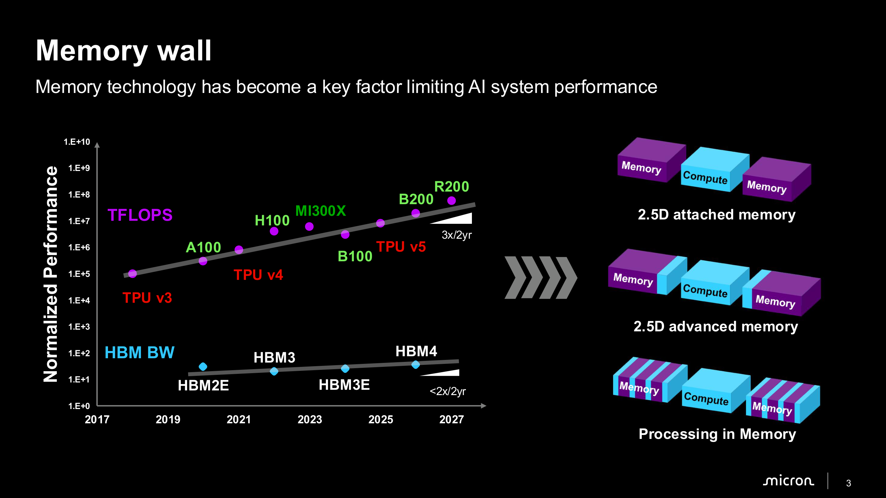
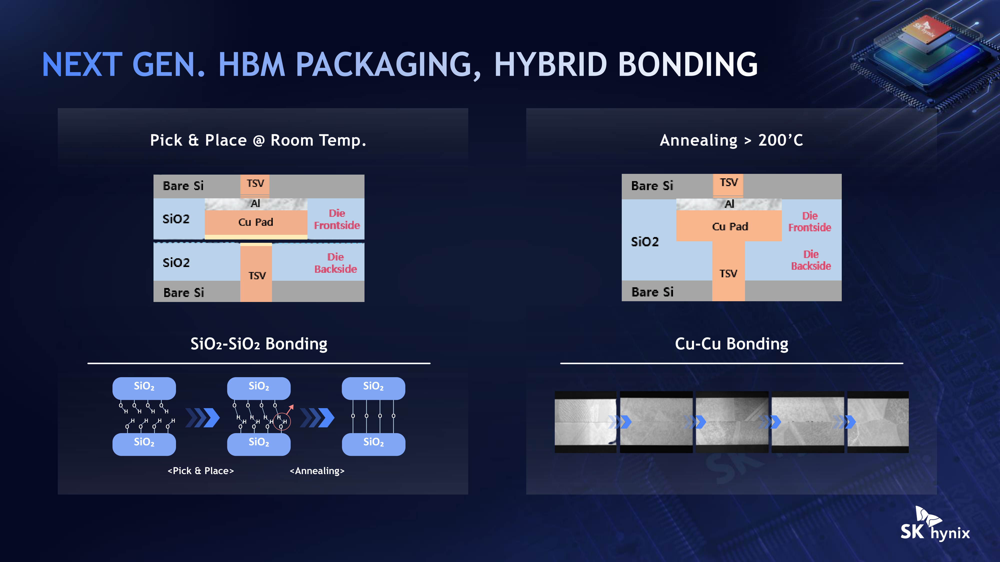
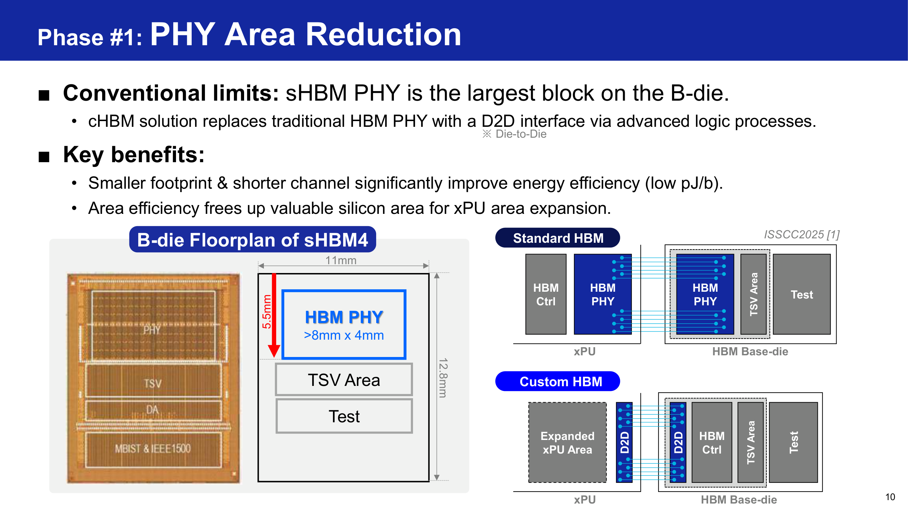
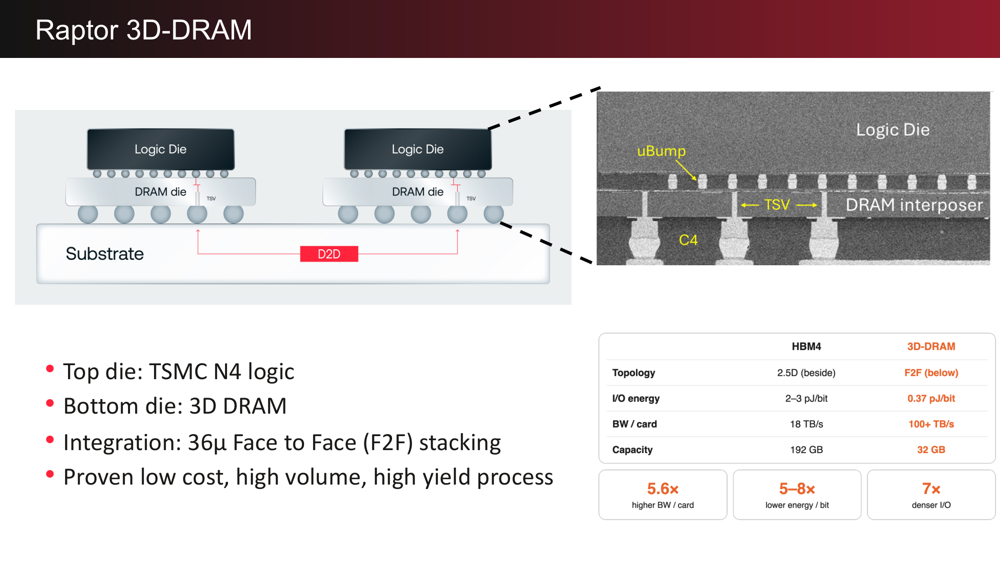
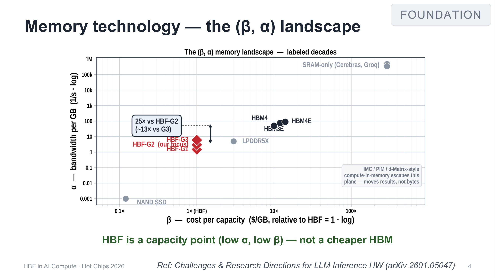

It has been a busy few weeks, with travel and late work nights, but most importantly, Hot Chips 2026. This was my first time attending live and, boy, what a year to attend. A quick thanks to Srinija for the tickets. I have so much in my head from the conference that a priority-ordered brain dump was needed. Call it cache eviction. So here we go.
While accelerator throughput scales at 3× every two years, High Bandwidth Memory (HBM) bandwidth advances at less than 2× every two years [Micron, 3]. Standard 2.5D interposer integration is encountering hard physical barriers in beachfront area, I/O power dissipation and thermal management [d-Matrix, 5] [d-Matrix, 6]. What follows are my quick notes on the tutorial proceedings across advanced logic base dies in HBM [Samsung, 6] [Samsung, 7], monolithic 3D-DRAM accelerators [d-Matrix, 17], and High-Bandwidth Flash (HBF) tiering [OXMIQ, 2] [OXMIQ, 4].
First, let us build an understanding of the physical and thermodynamic limits of HBM. Generative inference execution is partitioned into a compute-bound prompt prefill phase and a memory-bandwidth-bound autoregressive decode phase [d-Matrix, 10]. As context lengths reach 1M tokens, the key-value (KV) cache footprint expands rapidly: 14.6 GB per user for Kimi K3 at 1M context, totaling approximately 935 GB across a batch of 64 users [d-Matrix, 2]. Runtime profiling across frontier models such as GLM 5.2 and Kimi K3 demonstrates that the decode stage consumes the vast majority of wall-clock execution time. Consequently, service interactivity (tokens/s/user) and throughput are directly gated by memory bandwidth and data-movement energy [d-Matrix, 11] [OXMIQ, 5].
Standard 2.5D silicon interposer integration cannot scale to meet these demands. Dedicated beachfront along the compute-die perimeter restricts package placement to four to eight HBM stacks, capping practical HBM4 bandwidth at approximately 20 TB/s on contemporary packages [d-Matrix, 5]. Driving wide 2.5D interposer traces requires 2.0–3.0 pJ/bit in HBM4, with an additional approximately 3 pJ/bit expended on on-chip distribution [d-Matrix, 8]. Sustaining a 100 TB/s memory stream over 2.5D HBM links requires 1.92–2.4 kW purely for memory I/O [d-Matrix, 6].
Heterogeneous packaging also introduces severe reliability vulnerabilities. Thermal-expansion, or coefficient-of-thermal-expansion (CTE), mismatches across silicon, microbumps and organic substrates generate mechanical stress [Micron, 14]. Telemetry from Meta's training clusters indicates that GPU HBM3 memory failures accounted for 17.2% of all unexpected hardware interruptions during Llama 3 405B pre-training [Micron, 14]. To stack beyond sixteen dies, or greater than 16Hi, packaging must shift from Mass Reflow Molded Underfill (MR-MUF) and Thermo-Compression Non-Conductive Film (TC-NCF) to direct Hybrid Copper Bonding (HyB) [SK hynix, 13]. HyB eliminates solder microbump gaps (“Zero Gap”), reducing TSV bump pitch below 10–18 µm while delivering up to a 35% reduction in normalized thermal resistance in 20-high configurations [SK hynix, 14].


The first architectural response is to turn the HBM base die from a passive interface into active logic. Memory vendors are overhauling it across three distinct phases [Samsung, 2] [Samsung, 25]. In Phase 1, migrating base dies from planar DRAM processes to 4 nm FinFET logic replaces standard HBM PHYs with compact Die-to-Die (D2D) interfaces, shrinking the PHY area from more than 8 × 4 mm2 to 8.5 × 1.5 mm2 and reducing channel depth from 5.5 mm to 2.0 mm [Samsung, 10] [Samsung, 11]. Offloading the memory controller and integrating SRAM-based cell-repair arrays into the base die reclaims host SoC area and enables fine-grained defect redirection across channels [Samsung, 13] [Samsung, 14]. To dissipate high power densities above 2.0 W/mm2 in sHBM5, Heat Path Blocks (HPBs) provide dummy-silicon thermal conduits, reducing peak junction temperatures by more than 35% with greater than 50% PHY coverage [Samsung, 12].
Phase 2 exploits the remaining base-die silicon for on-die telemetry sensors, built-in self-test pattern generators (OD-ATE/PGEN), near-memory Processing Elements (PEs), and outer-shoreline memory controllers that bypass host PCIe channels [Samsung, 16] [Samsung, 18] [Samsung, 19]. Phase 3 achieves true vertical convergence, or zHBM, through Wafer-on-Wafer (WoW) bonding [Samsung, 21] [Samsung, 24]. Stacking core DRAM directly over host logic with distributed area I/O eliminates SERDES interfaces, reducing I/O power by 70% and increasing aggregate DRAM bandwidth by 230% [Samsung, 22] [Samsung, 23].

A second response is monolithic 3D-DRAM. Its commercial realization was demonstrated in d-Matrix's Raptor accelerator, which integrates a TSMC N4 logic die directly over a 3D-DRAM die using 36 µm-pitch Face-to-Face (F2F) microbumps [d-Matrix, 17]. Operating across a single-cycle vertical interface at 0.37 pJ/bit, Raptor delivers 100 TB/s across an eight-chiplet card, or 32.6 GB/s/mm2, providing 20× higher bandwidth density and 13.5× lower power per unit bandwidth than HBM4: 2.96 mW/GB/s versus 40.0 mW/GB/s [d-Matrix, 13] [d-Matrix, 28].

Direct vertical integration requires resolving three interconnected microarchitectural constraints [d-Matrix, 18]. The first is bank mapping and Stream Blocking. Tensor engines require 128-byte flits, but DRAM banks deliver 32 bytes per column access [d-Matrix, 20]. After provisioning 72 spare banks for redundancy out of 840 physical banks, the remaining 768 active banks yield only three banks per channel across 256 channels: 768 / 256 = 3 [d-Matrix, 20]. A standard two-cycle access fetches 192 bytes for a 128-byte request, causing a 33% overfetch penalty, or approximately 33 TB/s of lost bandwidth [d-Matrix, 21]. Stream Blocking groups three 128-byte flits (384 B) into four 96-byte accesses (384 B) through a shared partial-access cycle, achieving 0% overfetch without shifting networks [d-Matrix, 22].
The second constraint is pinless Data Bus Inversion, implemented as Stream Flipping. At 100 TB/s, raw I/O power reaches 296 W: 100 TB/s × 0.37 pJ/bit [d-Matrix, 23]. Because single-cycle parallel vertical links lack burst-lookahead windows and dedicated DBI pins, Stream Flipping evaluates bit transitions along a continuous stream and writes a one-bit inversion tag co-located with paired [132, 128] Reed-Solomon ECC metadata [d-Matrix, 26]. This delivers the full 20% dynamic I/O power reduction at an overhead of only 0.8% [d-Matrix, 24].
The third constraint is thermal refresh and fault tolerance. High logic activity drives DRAM junction temperature, Tj, to 105°C, dropping cell retention from 32 ms at 85°C to 4 ms, an eightfold refresh rate [d-Matrix, 25]. Deep banking with 1,366 rows per bank, versus approximately 32K rows in commodity DRAM, shortens row sweeps and restricts refresh overhead to less than 1.37% of total bandwidth [d-Matrix, 26]. A two-level multiplexer network chains spare banks in-line to bypass up to two arbitrary faults per channel while maintaining channel symmetry [d-Matrix, 27].
The quantitative comparison across the resulting memory subsystems is:
| Metric | On-die SRAM | 2.5D HBM4 (24/32 Gb) | 3D-DRAM (Raptor) | High-Bandwidth Flash (HBF-G2) |
|---|---|---|---|---|
| Interconnect topology | Monolithic on-die [d-Matrix, 4] | 2.5D silicon interposer [d-Matrix, 5] | 3D Face-to-Face [d-Matrix, 17] | 2.5D / UCIe [OXMIQ, 2] |
| I/O energy | ~0.05 pJ/bit [d-Matrix, 8] | 2.0–3.0 pJ/bit [d-Matrix, 8] | 0.37 pJ/bit [d-Matrix, 17] | Interface-bound [OXMIQ, 2] |
| Bandwidth density | Ultra-high (300 TB/s) [d-Matrix, 4] | 1.51–1.67 GB/s/mm2 [d-Matrix, 28] | 32.6 GB/s/mm2 [d-Matrix, 28] | Low (α ≈ 1.5–3.0) [OXMIQ, 4] |
| Power metric | Lowest (~50 fJ/bit) [d-Matrix, 8] | 40.0 mW/GB/s [d-Matrix, 28] | 2.96 mW/GB/s [d-Matrix, 28] | High per GB/s [OXMIQ, 6] |
| Capacity per unit | ≤4 GB per pair [d-Matrix, 4] | 24–48 GB per stack [Micron, 7] | 32 GB per card [d-Matrix, 12] | 256–512 GiB per cube [OXMIQ, 2] |
| Optimal workload regime | Speculative draft [d-Matrix, 4] | Dense prefill [OXMIQ, 5] | Low-latency decode [d-Matrix, 29] | Sparse attention / MoE [OXMIQ, 17] |
The final boundary is economic and workload-dependent: HBM versus HBF. Architectural modeling from OXMIQ Labs demonstrates that memory provisioning is governed by the joint capacity-bandwidth formulation [OXMIQ, 6]:
Here β is cost per capacity ($/GB relative to HBF), C is the capacity footprint in GB, I is token interactivity in tokens/s/user, b is bytes fetched per step, and α is bandwidth density in GB/s per GB [OXMIQ, 4] [OXMIQ, 6].
While High-Bandwidth Flash, under OCP HBF v0.7.0, provides an 8–16× capacity advantage over HBM at iso-cost, its bandwidth density, α, is 25× lower than HBM4 [OXMIQ, 2] [OXMIQ, 4]. For dense models and high batch sizes above 128, where bandwidth demand dominates, all-HBF configurations result in higher cost per token ($/M-token) than HBM baselines despite their low nominal silicon cost [OXMIQ, 5] [OXMIQ, 12].
HBF is, however, highly effective in large Mixture-of-Experts (MoE) models such as Kimi K3 2.8T, where 93% of the parameters, or 1.45 TB, reside in routed expert blocks, and in sparse-attention mechanisms [OXMIQ, 17]. Routed expert access scales non-linearly with batch size:
In OXMIQ's model [OXMIQ, 10], under sparse-attention regimes where only 1–2% of KV-cache entries are read per step, cold expert weights and dormant KV histories can be stored economically in HBF over UCIe links [OXMIQ, 19]. This hierarchy offloads capacity pressure from host DRAM while preserving high-bandwidth HBM and 3D-DRAM for active token generation [OXMIQ, 18] [OXMIQ, 20].

The broader lesson from Hot Chips is that the memory problem is increasingly a topology problem, not merely a DRAM technology problem. HBM solved capacity by stacking memory vertically, but still moves data laterally across scarce package beachfront. 3D-DRAM attacks that constraint by moving the interface into the third dimension, while active HBM base dies push computation closer to memory and HBF adds another tier for capacity. Perhaps the next memory hierarchy needs less hierarchy and more geometry.